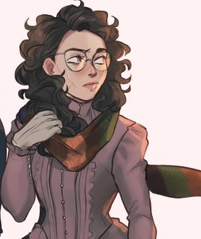
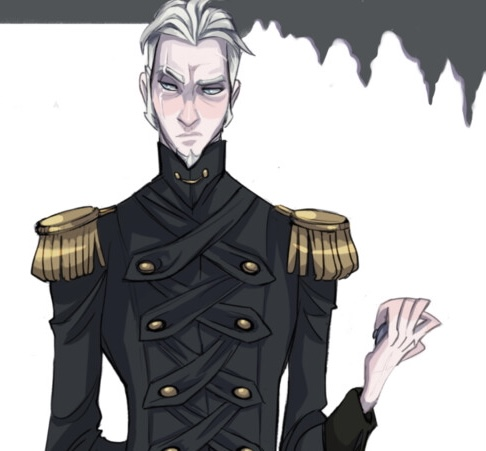
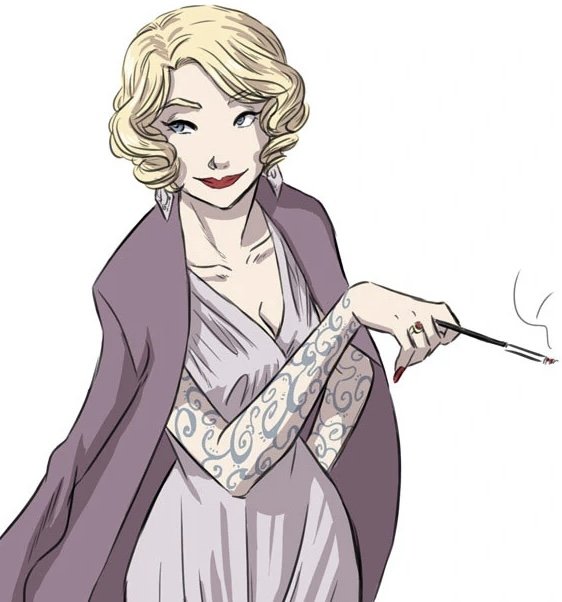
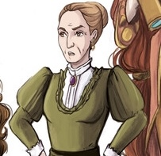
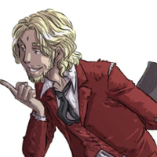
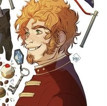
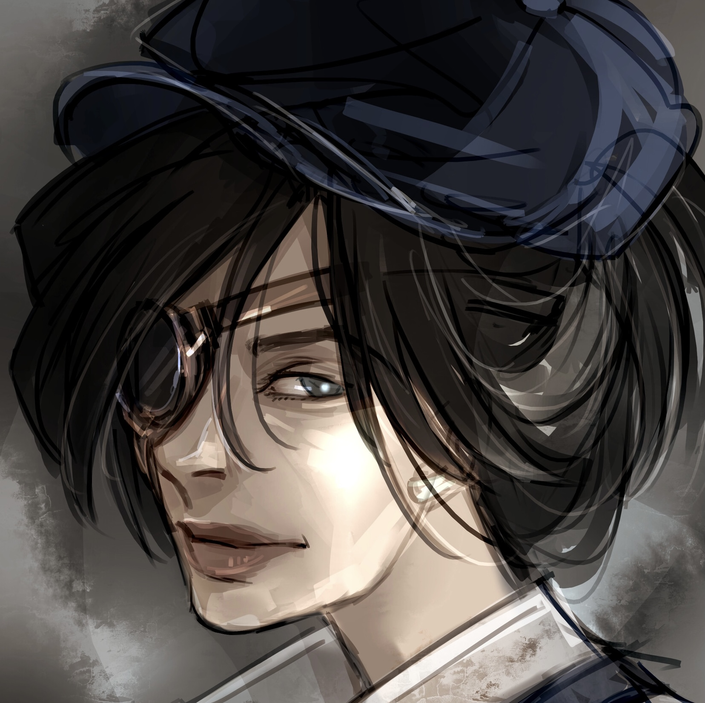

Link to the bottom
A guide to The Mirror Visitor Quartet by Christelle Dabos

For a fact this quartet is actually translated from french; author's last name (Dabos) is pronounced "duu-BWA".
A Winter's Promise - The Mirror Visitor - Book 1
The Missing of Clairdelune - The Mirror Visitor - Book 2
The Memory of Babel - The Mirror Visitor - Book 3
A Storm of Echoes - The Mirror Visitor - Book 4
‧͙⁺˚*･༓☾! Meet the main characters !☽༓･*˚⁺‧͙

Full name |
Height(ft) & Age(yrs) | Profile |
Yes or No? |
|
|---|---|---|---|---|
Ophelia |
5'2 |
19 - 20 |
 | Yes |
Thorn |
6'8 |
25 |
 | Yes |
Berenilde |
6'0 |
31 |
 |
No |
Aunt Rosalind |
5'5 |
34 |
 |
Yes |
Archibald |
6'6 |
25 |
 | Yes? |
Fox |
5'9 |
27 |
 | Yes |
Gale |
5'8 |
28 |
 |
Yes |
Farouk |
10'0 |
above 100 |
No |
|
The Knight |
4'9 |
8 - 10 |
No |
|
.・。.・゜✭・.・✫・゜・。.
Ophelia
Born on the ark of Anima, Ophelia turned down two marriage proposals before finding herself obliged to marry Thorn. Her family power enables her to read the pasts of objects and to travel through mirrors. Due to an incident when she was young, she is unusually clumsy. She is small and hides behind her changing colored mood glasses and three-colored scarf of her own animism (inherent ability to influence objects.) But behind her discreet manner, she hids determination and resilience. Though she is initially startled by the difference of customs of the Pole, she refuses to bow to the will of others by a sense of willness and truth.
.｡*ﾟ+.*.｡ﾟ+..｡*ﾟ+
“Going through the mirrors requires confronting yourself.
You need guts, you know, to look yourself straight in the eyes, to see yourself as you are, to dive into your own reflection. Those who hide their faces, those who lie to themselves, those who see themselves better than they are, they will never be able. So believe me, it doesn't run the sidewalks!”
.｡*ﾟ+.*.｡ﾟ+..｡*ﾟ+
Thorn
As previously mentioned, Thorn is the treasurer of The Pole-- an ark that is shrouded by mystery, politics and intrigues. He is part of the Dragon clan on his father’s side, and has the inherent ability to extend mental claws that can physically harm those near. Also is called a bastard on his ark because his mother’s clan had fallen from grace before he was born; but he gained an ability of perfect memory from her family. Thorn even clearly remembers the occasion his grandmother had strangled him as an infant.
Not only does his grandma, because frankly, everyone in The Pole harbors disdain toward Thorn. He is an unapproachable, lanky and Northern accented man that trusts no one, talks to no one (except his aunt.)His aunt, who had been on his side since he was young, never betrayed him like the rest of his father’s family.
He doesn’t relax, engage with the other residents for leisure and has absolutely no lenience for those he does business with-- who would deign to stick around a prick like him?
Despite being unwanted by society, Thorn has little concern about what others think of him. Yet in A Winter’s Promise this changes, and Thorn comes to care a lot surrounding the opinion of Ophelia. Though his initial impression of his fiance was a small, quiet girl who couldn’t possibly bear the customs and two-facedness of The Pole, he learns that behind the exterior Ophelia is opinionated and stubborn. The kind of person who will do anything she sets her mind to, a person who also holds no qualms about others opinions of her-- besides her sartorial choices that slightly concern his aunt.
And the more he sees, interacts with Ophelia the more he feels. . . Uplifted. . . and even a little more than that.

.｡*ﾟ+.*.｡ﾟ+..｡*ﾟ+
“Are you coming back?” He said gruffly.
“Why?” She couldn’t stop herself from being on the defensive. In the mirror, she saw Thorn’s reflection frowning hard enough to distort his scars.
“Thanks to your ability to travel through mirrors you could keep me informed of the situation at Clairdelune. And,” he added more quietly, taking a sudden interest in his shoes,
“I think I’m starting to get used to you.”
.｡*ﾟ+.*.｡ﾟ+..｡*ﾟ+
Berenilde
Aunt Rosalind
Archibald
A member of the Web clan, endowed with a version of telepathy that is characteristic of members of the Pole family, Archibald is the Pole’s ambassador, but the exact nature of his duties is unclear since an ambassador would be expected to have a certain sense of. . . diplomacy. He, however, devotes himself to doing the exct opposite. Scruffym cavalier , and a skirt-chaser, he also makes a habit of never lying, and doesn’t always care about the feelings of whom he is speaking to (lol.) He is both greatly respected and greatly disdained for his escapades. But perhaps it is his angelic beauty that makes others quicker to forgive him.
Fox
Gale
Family Spirits
God & The Other
The Memory of Babel
Full name |
Height(ft) & Age(yrs) | Facts |
Yes or No? |
|
|---|---|---|---|---|
Ophelia |
5'2 |
19 - 20 |
Yes |
|
Thorn |
7'0 |
25 |
Yes |
|
Ambrose |
?he sits in a wheelchair |
31 |
Yes |
|
Octavio |
5'6 |
34 |
Yes 100% yes |
|
Elizabeth |
5'6 |
27 |
|
|
Mediana |
5'5 |
27 |
No |
|
Professor Wolf |
6'6 |
27 |
Yes and no |
|
Blaise |
5'9 |
27 |
Yes |